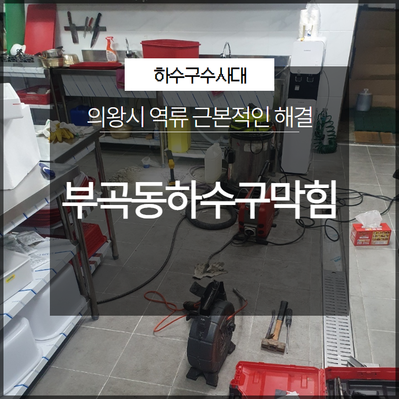
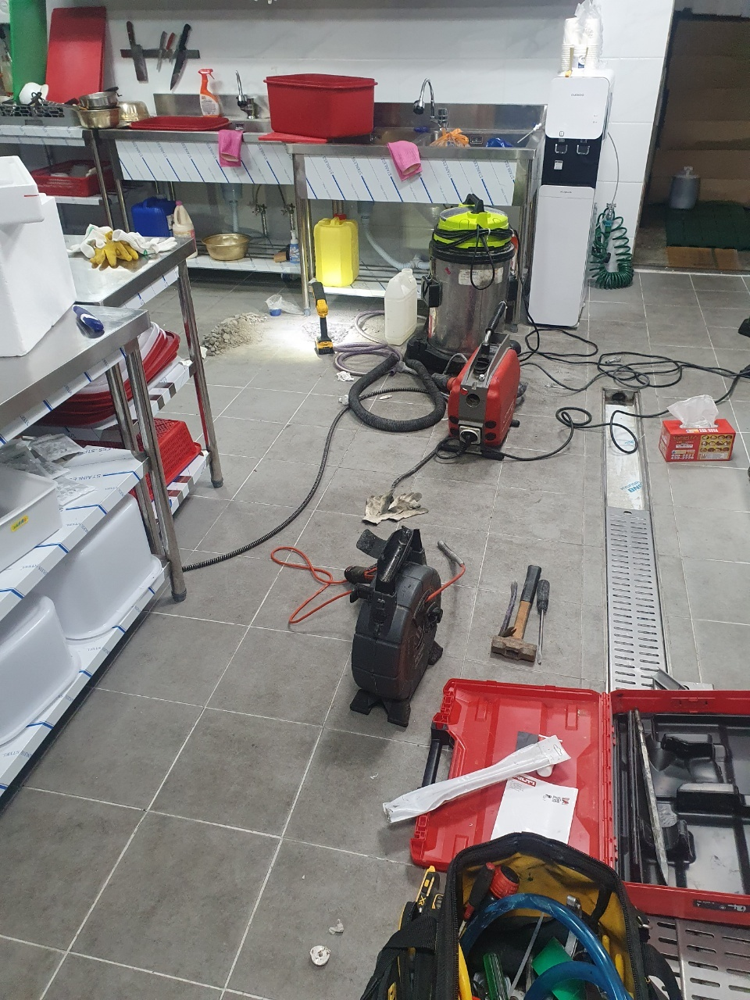

🏠 의왕시 부곡동하수구막힘 역류 근본적인 해결 해드리는 업체
용인 싱크대막힘 전문 시공 후기

📋 작업 개요
- 위치: 용인
- 서비스 유형: 싱크대막힘, 하수구막힘, 배관막힘, 누수수리, 역류해결, 고압세척
- 작업 일시: 2023. 5. 7. 1:09
- 업체명: 하수구수사대 (010-5615-2118)
🔍 문제 상황
안녕하세요. 하수구수사대입니다.
오늘은 의왕시 부곡동하수구막힘 역류 근본적인 해결 작업을 위해 바쁜 하루를 보내고 돌아왔는데요. 요즘 들어 하수구 막힘, 그리고 역류까지 해당 현상들로 인해 문의를 주시는 분들이 나날이 늘고 있어 여러분께 현장의 모습을 소개해드리고자 이렇게 찾아뵙게 되었습니다. 사진과 함께 후기를 준비해 봤으니 지금부터 살펴보도록 할게요.
하수구 막힘과 역류 현상은
때와 장소를 가리지 않고 어디에서나 쉽게 일어날 수 있으므로 항상 발견 즉시 빠른 대처가 필요합니다. 이를 방치해 둘 경우 악취까지 이어지게 되어 나뿐만이 아니라 주변 이웃들에게도 피해를 주게 되는데요.
하수구는 막힘이 시작된 경우 자연스레 나아지는 것은 불가능하며 계속해서 막힘 현상이 악화되기 마련입니다. 반드시 발견 즉시 그에 따른 조치를 취해 주시는 것이 2차, 3차적인 비용 발생을 막을 수 있고 피해를 줄일 수 있는 가장 현명한 정답이라는 사실 모두 알아주시기 바랍니다.

🔎 원인 분석
💡 전문가 진단: 하수구 막힘과 역류 현상은
배관이 막힌 상태로 방치할 경우에는
배관 미세 파열, 등과 같은 문제로까지 번져 크게는 누수가 발생될 수 있습니다. 늘 친절한 상담을 통해 현재 상태를 파악하고 일정 조율을 하여 현장에 방문해 그 누구보다 정확하고 빠른 의왕시 부곡동하수구막힘 역류 근본적인 해결 작업을 진행하고 있는 하수구수사대입니다.
오늘 의뢰자분께서도 일시적인 현상이겠지 생각을 하시고는 방치해두었는데 역류까지 발생되니 심각성을 깨닫고 급히 연락을 주셨는데요. 최대한 빠르고 정확한 의왕시 부곡동하수구막힘 역류 근본적인 해결 작업을 위해 원인 파악부터 차근차근 시작했습니다.
정확한 원인 파악을 위해
그에 따른 작업이 이루어져야 합니다. 현재 저희 하수구수사대는 고가의 최신식 장비들을 다량 보유하고 있어 작업이 복잡한 환경 속에서도 정확한 원인 파악과 그에 따른 해결이 가능합니다.

🔧 작업 과정
의왕시 부곡동하수구막힘 작업을 위해 내시경 카메라를 통해 막힌 하수구 배관을 살펴보았습니다. 예상과 같이 배관이 온갖 이물질들과 머리카락, 슬러지, 등으로 가득 막혀 있었고 다행스럽게도 배관 손상이나 훼손은 발생되지 않은 상황이었는데요.
이물질이 가득 쌓여 있을 경우 빠른 해결이 이루어지지 않는다면 물길의 흐름을 방해하고 그로 인해 배관이 팽창하게 됩니다. 해당 상황이 반복된다면 배관은 계속해서 팽창되고 그에 따라 손상이 되어 누수로까지 이어질 가능성이 높죠.
최대한 빠른 해결을 위해 내시경 카메라를 통해 디테일한 부분까지 꼼꼼하게 살펴보며 원인 파악을 진행했고 오랜 기간 쌓여 있는 이물질을 제거하기 위한 해결 작업을 시작했습니다.
작업 과정에 대해 알아보겠습니다.
구석구석에 덩어리 형태로 굳어져 붙어 있는 이물질들도 확인이 되어 보다 섬세한 작업이 필요했습니다. 하수구 고압 세척을 통해 배관 속에 들러붙어 있는 이물질들을 제거하기 위해 해당 장비를 준비했는데요.
먼저 석션기를 통해 주변과 배관 안에 가득 고여 있는 물과 이물질을 1차적으로 빨아들여 제거하기 시작했습니다. 석션기는 물을 위주로 제거가 가능한 장비인 만큼 여기에서 작업이 마무리되는 것이 아니라 2차 제거 작업이 필요합니다.
하수구 문제를 예방하기 위해 공장이나 상가와 같은 곳에서는 주기적으로 전문 업체를 통해 고압세척을 진행하곤 합니다. 음식점과 같이 막힘의 빈도수가 높은 곳은 1년에 한 번씩 정기적인 검사 및 고압세척을 진행하는 것을 권장 드리고 있죠.
하수구 막힘 문제 해결에 탁월한 효과를 가져다주는 고압 세척은 설치 위치나 용도에 따라 배관 종류가 크게 달라지기 때문에 전문가가 해당 사항들을 모두 살펴보고 확인하여 그에 적합한 작업이 이루어져야만 합니다.


✅ 작업 완료
하수구나 싱크대, 등에 문제가 발견되었다면 방치하지 마시고 빠르게 문의 주시기 바랍니다.
거품 없는 견적 안내와 친절한 상담 그리고 전문적인 작업으로 깔끔한 해결 진행해 드리겠습니다.




⚠️ 베란다 누수 및 방수 관리 방법
- ✅ 비가 많이 올 때 창틀 주변이나 아래층 천장에 얼룩이 생기는지 정기적으로 확인해 보세요.
- ✅ 우수관 주변 실리콘 마감이 들뜨거나 깨진 틈새가 있는지 손상 여부를 수시로 체크하세요.
- ✅ 베란다 바닥 타일의 줄눈(메지)이 소실되면 그 틈으로 물이 침투하여 누수가 유발됩니다.
- ✅ 누수 의심 증상 발견 시 방치하면 아래층 손실이 커지므로 즉시 전문가의 진단을 받으십시오.
💡 핵심 정리
- 확실한 장비 작업(내시경 점검 및 샤프트 스케일링)으로 원인을 뿌리 뽑습니다.
- 작업 후 1년 이내에 동일한 부위 재발 시 100% 무상 A/S 서비스를 보장합니다.
- 서울 · 경기 · 인천 전 지역에 24시간 언제든 긴급 출동할 수 있도록 항시 대기 중입니다.
❓ 자주 묻는 질문 (FAQ)
🚨 용인 싱크대막힘 문제로 고민이신가요?
정확한 원인 진단과 확실한 시공으로 재발 없는 해결을 약속드립니다.
24시간 긴급 출동 | 서울 · 경기 · 인천 전지역 | 1년 내 재발 시 무상 A/S